AI+空天防务产业园项目
商业计划书
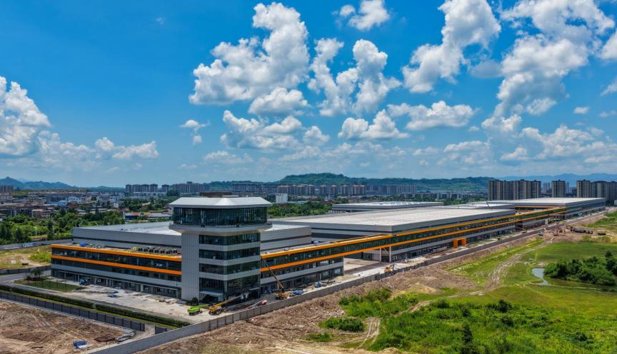
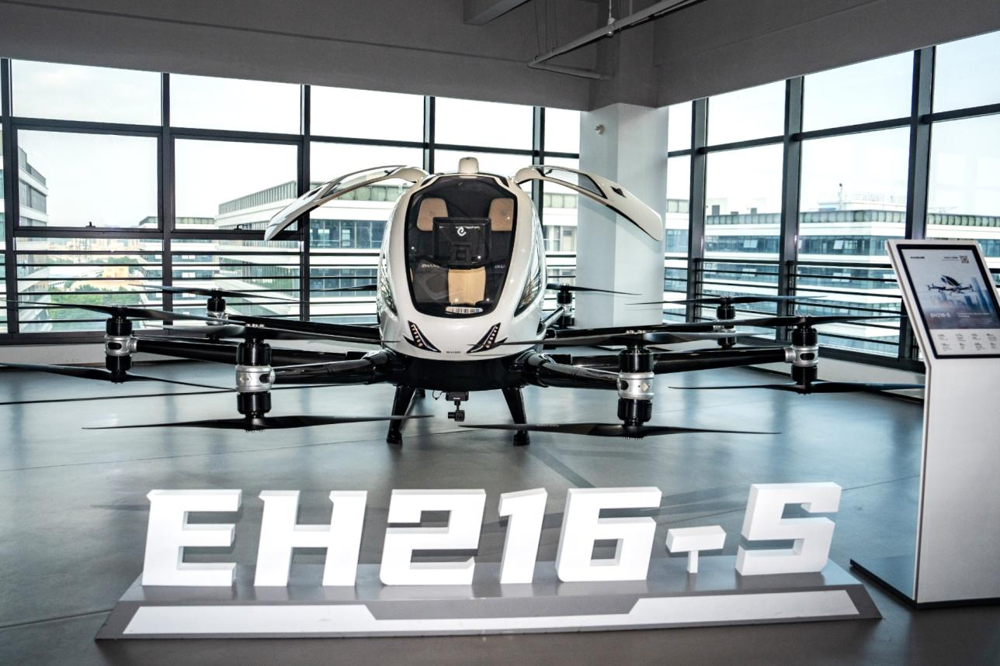
目录报告结构
本报告共十三章，另附资料来源、财务假设与免责说明；图表数据均取自项目财务测算结果（04 号文件）与公开证据库。
01执行摘要
核心判断、关键指标、三档产品速览与总体结论。
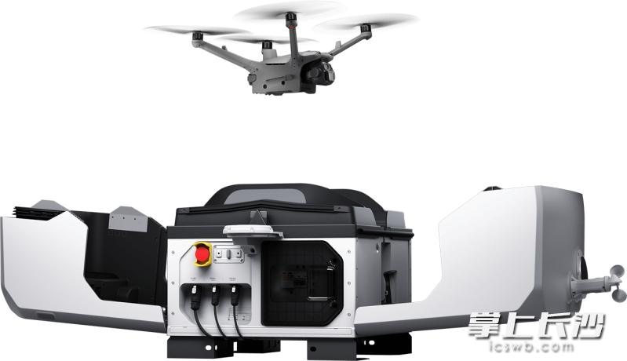
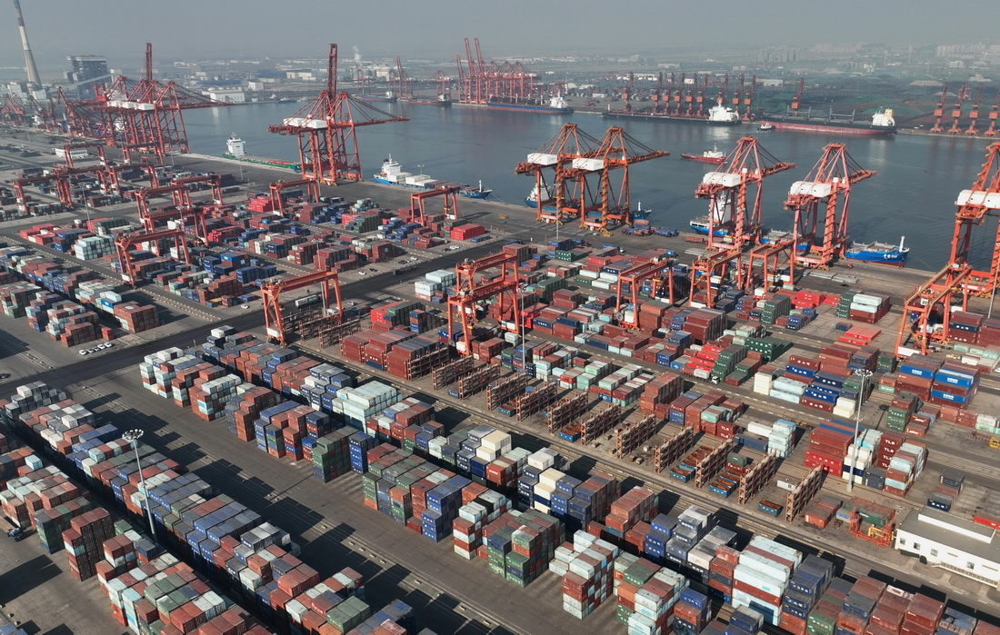
1.1 项目核心判断
本项目以空域与试飞中试为底座、以低空安防（要地防护）为特色、以"人工智能+低空智联网（AI+UTM）"为护城河，集聚"低空安防装备＋有人机/通航与 eVTOL 整机＋空天信息"三大产业，形成可在全国各省标准化复制的现代化空天防务产业社区。项目同时服务国家安全（低空安全治理体系现代化）、契合新质生产力与"人工智能+"国家战略、承接低空经济万亿级产业增量，具备"政府引导基金让利优先＋专业运营商品牌招商＋央企/链主订单锚点"的三层混合开发模式。
需求侧已经形成公开、持续、可核验的采购实证：2024—2026 年党政机关与重点目标单位公开成交的低空安防装备与系统项目以"小额高频"为特征，城市级飞行服务平台与管控平台单体可达数千万元至数亿元，为园区平台收入与招商订单提供了现实锚点。
1.2 八项关键指标（三档标准化产品对比）
平台公司静态总投资
撬动入园企业累计固投
全投资税后 IRR
资本金税后 IRR
静态投资回收期
十年累计全口径税收
达产直接就业
达产亩均税收目标
1.3 三档产品速览
| 维度 | 起步园 A（300 亩 / 5 亿） | 标准园 B（1,000 亩 / 20 亿） | 旗舰园 C（3,000 亩 / 60 亿） |
|---|---|---|---|
| 适用场景 | 县域 / 临空小点 / 老工业区改造起步区 | 地级市 / 省会临空经济区核心园 | 省会 / 国家枢纽城市、国家级经开区 |
| 载体建筑面积 | 24 万㎡（容积率 1.2） | 80 万㎡（容积率 1.2） | 260 万㎡（容积率 1.3） |
| 建设到投产 | 12—18 个月起步 | 24—30 个月 | 30—36 个月 |
| 全投资 NPV（8%） | −2,723.7 万元 | −5,611.7 万元 | +109,136.9 万元 |
| 十年代码：税收 / 就业 | 10.44 亿元 / 直接 3,372 人 | 41.76 亿元 / 直接 11,200 人 | 146.16 亿元 / 直接 36,260 人 |
1.4 总体结论（如实表述，不作美化）
- 社会属性显著、平台属性偏公益：A、B 两档平台公司承担公共基础设施与平台服务职能，全投资 NPV 在 8% 折现率下为负，符合县域与标准档公共基础设施平台的公益属性；两档资本金 IRR 为正（17.93%、20.75%），资本金层面具备投资吸引力。旗舰园 C 规模效应下全投资 IRR 13.82%、NPV 为正，财务可行性最强。
- 社会效益是主要回报：三档十年累计地方留成税收 3.97 / 15.87 / 55.54 亿元，达产直接就业合计最高 3.63 万人、带动就业 9.07 万人，并形成产业集聚、技术溢出与区域协调效应。
- 第一敏感因素为返税比例：敏感性分析显示，全投资 IRR 受"返税比例""投资额""达产速度"影响最大；税收返还须与招商履约考核挂钩，本项目不做税收减免承诺，具体基线在招商协议与可研阶段核定。
- 可复制内核清晰："一总部＋多基地＋边防场景验证"网络与三档标准化产品，使各省可按经济规模、空域条件与产业基础择档落地，再向第二省轻资产输出"品牌＋运营＋基金"。
02项目总体方案与战略定位
定位表述、产业架构、标准化可复制模式与三档产品总览。
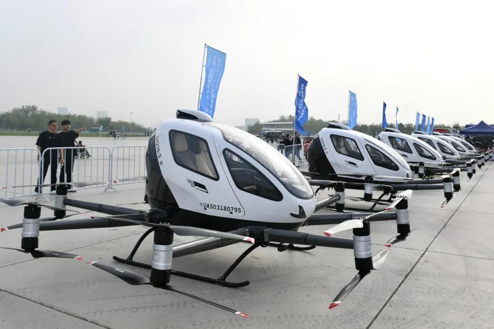
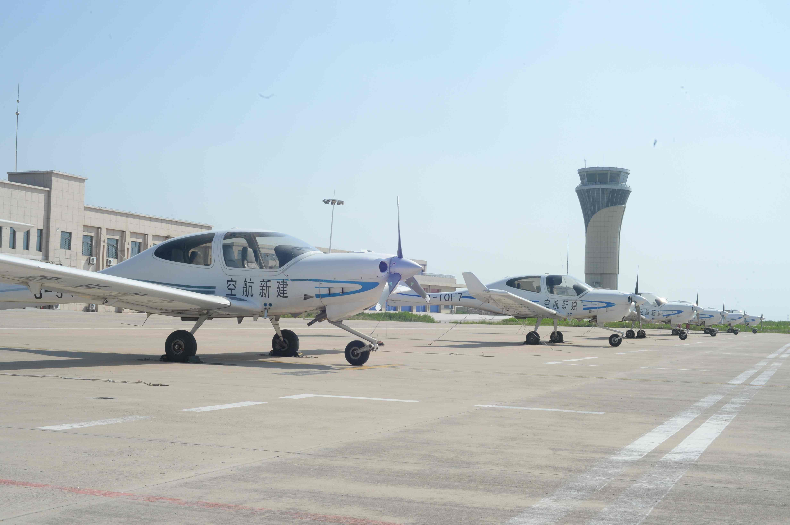
2.1 项目定位（统一表述）
项目名称：AI+空天防务产业园（全国可复制标准化产品）。
一句话定位：以空域与试飞中试为底座、以低空安防（要地防护）为特色、以"人工智能+低空智联网（AI+UTM）"为护城河，集聚"低空安防装备＋有人机/通航与 eVTOL 整机＋空天信息"三大产业，可在全国各省标准化复制的现代化空天防务产业社区。
三个结合点：
服务国家安全
完善低空安全治理体系与机场、能源、监所、边检等重点目标防护能力，属于公共安全装备与运行监管服务范畴。
契合新质生产力
对接"人工智能+"行动、通用航空装备创新应用与商业航天、卫星互联网等新兴产业方向。
承接产业增量
承接低空经济万亿级市场增量，形成装备制造、平台运营、检测认证、数据服务协同的产业生态。
2.2 产业架构：一底座、三特色、五方向
| 层级 | 构成 | 内涵 |
|---|---|---|
| 底座 | 空域与试飞中试底座 | 试飞场地与空域批复先行、标准厂房与总装厂房、测控指挥与电磁环境试验区、检测认证中心，为三大产业提供公共中试与验证条件。 |
| 特色一 | 低空安防（要地防护）装备集聚 | 面向公安、机场、能源核设施、监所、边检、重大活动等公共安全场景的民用与公共安全装备，以及城市级"以租代购"运营服务。 |
| 特色二 | AI+UTM 低空智联网护城河 | 对接国家 UOM 与省市监管平台，提供通导监一体基础设施、数字孪生平台、AI 识别与多传感器融合能力，形成平台与数据层壁垒。 |
| 特色三 | 三大产业协同集聚 | 低空安防装备、有人机/通航与 eVTOL 整机、空天信息（卫星互联网/北斗/遥感/商业航天）在同一园区内配套协作。 |
| 方向一 | 检测认证 | 联合权威机构建设低空安防装备与通航/eVTOL 部件检测认证中心，形成中立化质量背书。 |
| 方向二 | 试飞中试与共享制造 | 复材、结构件、总装共享厂房与试飞场地，降低中小企业中试门槛。 |
| 方向三 | 平台运营 | 飞服平台运维、城市级低空安防运营、算力服务与数据要素运营。 |
| 方向四 | 数据要素 | 航迹、遥感、北斗时空数据分级分类、本地化存储与合规运营。 |
| 方向五 | 场景服务 | 面向政法、公安、机场、能源、应急等开放"以试代购"场景与场景券。 |
2.3 标准化可复制模式
网络结构："一总部＋多基地＋边防场景验证"网络——总部承担品牌、标准、基金与招商中枢；多基地按三档产品在各省落地；边疆沿边口岸与高寒/高原试验场承担场景验证与差异化功能。
开发模式（三层混合）：
- 政府引导基金（让利优先）：财政资金、地方政府专项债与省级引导基金优先承担公共平台与基础设施投入，基金让利条款前置约定；
- 专业运营商（品牌招商）：输出园区品牌、招商体系与运营服务，绑定管理协议与业绩对赌；
- 央企/链主（订单锚点）：引入中国电科、中国电子/电信、航空工业、航天科技科工体系内企业与链主龙头，以场景、订单与供应链对接带动中小企业集聚。
03政策依据与战略窗口
政策闭环时间线、法律责任链、依法治理需求与专项资金通道。政策核名核期核文号，引用以公开原文为准。
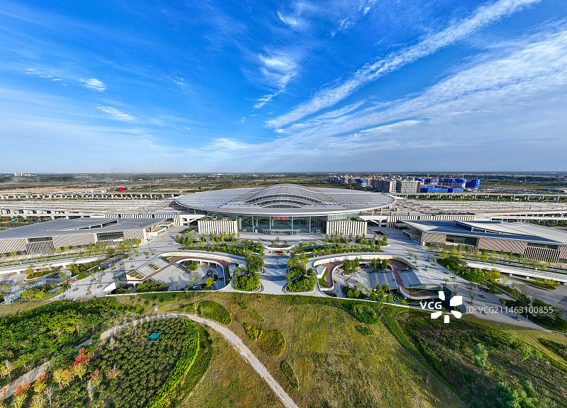
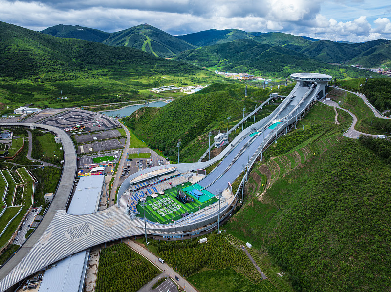
3.1 政策闭环时间线（2023—2026）
低空经济自 2023 年中央经济工作会议首提后，连续 2024、2025、2026 三年写入《政府工作报告》；法规、机构、标准、统计分类与平台规范在 2024—2026 年密集落地，形成"顶层政策—行政法规—部门规章—技术标准—统计口径"的完整闭环。
3.2 法律责任链与依法治理需求
| 层级 | 依据（公开法规原文口径） | 对园区业务的约束与支撑 |
|---|---|---|
| 重点目标防护制度 | 《反恐怖主义法》第三十一条重点目标安全防护制度；国令第 761 号第四十三条明确反制设备三类授权主体 | 机场、能源、核设施、监狱、大型活动等重点目标依法配置低空安防能力，需求具备法定依据 |
| 飞行活动管理 | 国令第 761 号：飞行活动申请、实名登记、禁飞与限飞、第三十四条禁拍涉密设施 | 园区试飞、测试活动须履行空域与飞行申请；园区产品面向合规民用与公共安全场景 |
| 治安责任 | 新《治安管理处罚法》第四十六条：违规飞行可处 5—10 日拘留；非法穿越国边境的处 10—15 日拘留 | "黑飞"治理刚性增强，公安管控平台与要地防护装备需求持续释放 |
| 行业标准 | GB 42590-2023（2024-06-01 实施）；GB 46750、GB 46761-2025（2026-05-01 实施）；GB 46860-2025（2027-01-01 实施） | 检测认证中心可对标国标开展第三方检测，形成标准卡位 |
| 出口与两用物项 | 商务部、海关总署、中央军委装备发展部 2026 年第 49 号公告 | 园区涉两用物项业务须建立内控合规流程，配备"一站式"合规辅导 |
3.3 专项资金与金融工具通道
园区重资产投入可组合使用财政补助、地方政府专项债、政策性银行贷款、产业基金与 REITs 退出工具，形成"建设期政府资金引导—运营期基金参与—成熟期 REITs 退出"的闭环。
地方政府专项债
国办 2024 年 12 月专项债管理机制意见将低空经济等新兴产业基础设施纳入作项目资本金正面清单，资本金比例上限由 25% 提高至 30%；园区、通用机场、飞行服务站、航线管控系统均可申报。
中央预算内与特别国债
"两重"建设提前批约 2,950 亿元中包含低空方向；超长期特别国债、中央预算内投资可支持公共平台、检测认证与试飞中试设施。
产业基金三层结构
省级母基金＋垂直子基金＋AIC（产业投资公司）；地方参照：重庆 20 亿元空天低空基金、四川 30 亿元专项基金、湖南"30+10+5+5 亿元"基金矩阵、成都 8 只基金目标超百亿元、合肥 200 亿元引导母基金加 100 亿元未来产业基金。
退出通道：中金联东民营产业园首单 REIT（代码 508003，2024 年 11 月上市，3 个园区、建筑面积 19.84 万㎡）与易方达广开 REIT 已验证产业园资产证券化路径；无锡梁溪发行全国首单未来产业科创债 5 亿元，投向商业航天、低空与 AI 方向。园区自第 5 年起开展 Pre-REITs 资产包培育。
04市场分析
全球及中国低空安防市场（多口径并列）、低空经济、通航与 eVTOL、空天信息四个板块。媒体测算与机构预测均标注口径，三板块规模口径交叉、不相加。
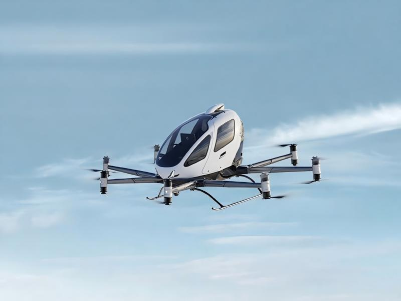
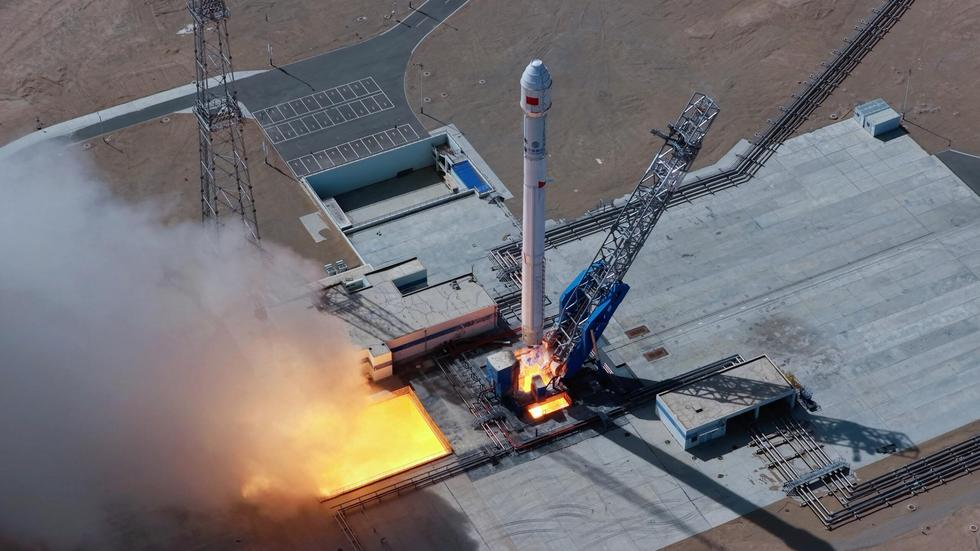
4.1 全球低空安防（反无人机）市场：多口径并列
不同机构因统计边界不同，2025 年全球市场规模区间差异显著：窄口径（系统设备硬件）约 31 亿—45 亿美元，宽口径（含军事集成、平台与服务）约 51 亿—74 亿美元；机构预测年复合增长率区间为 19.8%—27.9%。北美为最大存量市场，份额约三至五成（随口径不同）；亚太为增速最快区域（MarketsandMarkets 口径 CAGR 30.0%）。
4.2 中国民用与公共安全低空安防市场
国内市场同样存在窄、宽口径分歧：MarketsandMarkets 系统设备窄口径 2025 年 US$591.6 百万（约 42.5 亿元人民币，按 7.18 汇率测算），2030 年 US$1,401.0 百万（约 100.6 亿元），CAGR 18.8%；行业宽口径序列 2024 年约 30 亿元、2025 年约 85 亿元、2026 年约 150 亿元——其中 150 亿元为宽口径测算上限（36 氪转载"低空 Future"研究院测算式：存量 350 万架×渗透率 15%×设备均价 3 万元≈157.5 亿元），仅作上限参考。
4.3 低空经济：基数与预测
2023 年我国低空经济实际测算规模 5,059.5 亿元（赛迪研究院口径，同比 +33.8%）；民航局预测口径下，2025 年约 1.5 万亿元、2030 年有望达 2 万亿元、2035 年突破 3.5 万亿元，预测值不等于统计公报实际值。
4.4 运行基数（2025 年民航行业发展统计公报口径）
| 指标 | 数值（2025 年底） | 同比 / 备注 |
|---|---|---|
| 注册民用无人机 | 328.7 万架（其中大中型 42.3 万架） | +51.0% |
| 无人机注册用户 | 237.8 万个 | 同比增加 75.9 万个 |
| 无人机飞行小时 | 4,530.29 万小时 | +69.89% |
| 传统通用航空飞行小时 | 121.9 万小时 | −9.1% |
| 在册通用航空器 | 3,140 架 | — |
| 通用机场 / 运输机场 | 513 个（A 类 173 个）/ 270 个 | 通用机场净增 38 个 |
| 低空飞行服务站 | 46 个，覆盖 23 个省（区、市） | — |
| 操控员执照 | 41.55 万本 | +68.0% |
民航"十五五"目标：无人机实名登记率 100%、操控员执照超 100 万本、年飞行总量超 8,000 万小时。地方参照：广东省目标 2026 年低空经济规模超 3,000 亿元；芜湖航空产业基地 2025 年产值 350 亿元（同比 +32.6%）。
4.5 通航与 eVTOL：取证梯队
- 亿航智能 EH216-S：全球首个四证齐备载人 eVTOL，2025 年 3 月取得 OC（生产许可证），已在合肥开展商业试运营。
- 峰飞航空 V2000CG：全球首个吨级 eVTOL 型号合格证（TC），2025 年 7 月首架交付。
- 沃飞长空 AE200（吉利系）：截至 2026 年 10 月尚未取得 TC，四川证监局辅导备案、拟科创板上市；报告不按"已取证"表述。
- 小鹏汇天陆地航母：广州工厂规划年产 1 万台；订单口径约 5,000—7,000 台，具体以公司公告时点为准。
- 梯队配套：沃兰特 VE25（2026 年完成 3 亿美元 C 轮）、御风未来 M1、时的科技 E20（芜湖年产 200 架规划）；动力与材料配套见第八章招商图谱。
4.6 空天信息三板块（口径独立、禁止相加）
- 北斗时空产业 13,323 亿元（2025 年）：其中导航服务 6,290 亿元（+9.24%）、融合应用 7,033 亿元（中国卫星导航定位协会白皮书）。
- 商业航天核心产业 1.01 万亿元（2025 年，赛迪口径）：商业发射 50 次、占比 54%；入轨商业卫星 311 颗、占比 84%。广义市场 2.83 万亿元为媒体转引口径，边界不同，不与核心口径并列计算。
- 地理信息产业 9,005 亿元（2025 年，+5.9%）：民用遥感卫星在轨 670 颗；商业遥感数据服务 2025 年超 200 亿元、2030 年约 600 亿元（机构测算口径）。
- 星座进度（公开口径）：千帆星座在轨 256 颗（工信部 2026-09-16 工作动态）；垣信约 70 亿元 B 轮、估值约 500 亿元（媒体口径）；GW 星网 ITU 申报 12,992 颗。
05需求侧实证：党政机关招标采购盘点
79 个案例库、54 个有效成交样本的统计结果，七大行业结构、价格带与两条采购线。采购实证用于校准招商测算，不按大单假设装备收入。
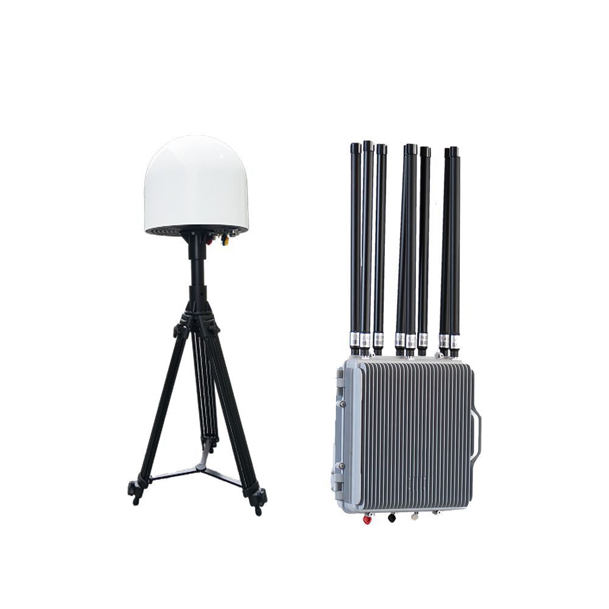
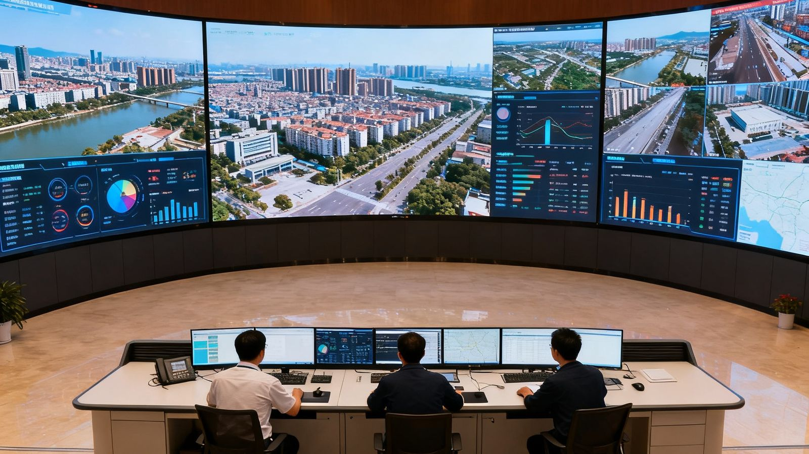
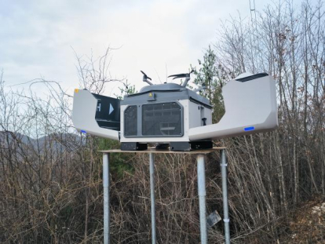
5.1 有效成交样本总体特征
2024—2026 年公开招标/成交案例库共 79 条；剔除候选人报价、招标中预算、废标终止、金额未公开、非反制辅助装备包与 2022/2023 年参考案例后，纳入金额统计的有效成交/预成交样本 54 条，合计 10,359.29 万元：最小 2.8789 万元（江苏龙潭监狱）；纯反制最大 668.32 万元（西安市公安局，西安交远，2025-10）；含组合包最大 1,959.72 万元（太原武宿机场，无锡雷华，驱鸟＋探鸟＋反制组合包）；中位数 118.15 万元、算术平均 191.84 万元，呈"小额高频"特征。
5.2 分行业采购结构
| 行业品类 | 条数 | 金额合计（万元） | 条均金额（万元） |
|---|---|---|---|
| 公安（省/市/县三级） | 20 | 3,920.27 | 196.01 |
| 机场（机场公安/飞行区） | 6 | 2,808.22 | 468.04 |
| 重大活动安保与短期租赁 | 9 | 1,542.68 | 171.41 |
| 能源与核设施要地防护 | 6 | 740.69 | 123.45 |
| 监狱 / 看守所 | 4 | 576.76 | 144.19 |
| 边检 / 边境 | 3 | 532.79 | 177.60 |
| 军队采购公开公告 | 6 | 237.88 | 39.65 |
观察要点：公安是第一需求方，市级项目多在 100—300 万元，省级机动平台可达 240—490 万元；机场场景分两类——机场公安/口岸便携或固定式几十至 250 万元，飞行区"驱鸟＋探鸟雷达＋反制"组合打包可达千万元级；监所呈省级打包趋势；能源要地覆盖核设施、油库、石化、电网、焦化、电厂；重大活动推动"租赁服务"模式；边检总站级项目可达 349.14 万元；军队公开公告均为小额标准化装备采购，仅作公开市场需求旁证，不涉及任何涉密参数。
5.3 价格带阶梯（装备与服务）
5.4 平台亿元级项目：另一条采购线
与装备"小额高频"并行，城市级低空飞行服务平台与管控平台单体金额远超装备，是园区平台运营收入的对标参照：
| 项目 | 金额 | 内容与模式 | 中标/候选主体 |
|---|---|---|---|
| 汉中市低空经济数字化基础设施及配套场景建设项目 | 2.95 亿元 | 通导监反一体化基础设施、飞服平台、数字孪生数据中台、政务巡检/文旅/应急/物流场景；工期 3 年；组建甲方控股独立法人项目公司，投资—建设—运维合伙人模式（类 PPP） | 中科星图＋西安御澜林（联合体） |
| 宿迁宿城区低空全域智慧运营体系设备采购及配套服务项目 | 1.4888 亿元 | 智联网基础设施、起降设施、低空智慧大脑一体化平台与应用场景；工期 24 个月 | 吉峰三农牵头＋南京莱斯＋江苏铁塔（联合体） |
| 合肥市低空经济基础设施项目（一期） | 1.4541 亿元 | 低空智联网、飞行服务平台、政务一网统飞三部分；2025 年 12 月成交（1.65 亿元为可研概算口径，不作中标价引用） | 四创电子牵头联合体（安徽移动、中科星图数字地球合肥、中电信数智） |
| 青岛市低空飞行管理服务中心与配套设施项目（一期） | 1.118 亿元 | 飞行管理服务中心与配套基础设施（第一候选人公示口径） | 通号青铁低空交通＋通号城市轨道交通 |
| 山东省低空智能网联系统平台开发项目 | 4,505 万元 | 省级低空智能网联系统平台开发 | 南京莱斯联合体（航天时代低空、齐鲁空天信息研究院、北斗伏羲） |
| 县域平台起步样本 | — | 辉县一网统飞 1,503.19 万元；泸水城市空地一体化治理综合体 1,749.80 万元；德州全域智慧低空平台 1,358.80 万元 | 中国铁塔新乡分公司；政府购买服务；数字政通等 |
两条采购线：一是政府飞行服务平台线（省市县飞服平台、智联网基础设施与运营服务购买）；二是公安管控平台线（如山东省公安厅民用无人驾驶航空器管控与实战一体化平台 1,205.30 万元，包 1 联通数科 1,198.50 万元、包 2 道普信息 6.80 万元）。
5.5 事件驱动与租赁服务形态
2024 年 9 月 11 日天津滨海机场无人机扰航事件：29 架次延误、8 架次取消、32 架次备降、约 3,000 名旅客受影响，推动机场要地防护与便携侦测反制装备配置加速；2025 年十五运会形成东莞、深圳龙华、光明、市本级等集中采购高峰。短期保障以租赁计费：重大活动租赁 4.15 万元/场起；城市级 SaaS 运维订阅约 60 万元/年（行业调研口径）。园区可复制"以租代购＋平台运维"模式平滑政务预算年度波动。
06技术路线与 AI 赋能
三层技术体系、六个 AI 赋能点、技术—价格对照，以及检测认证与联合实验室抓手。技术谱系仅作产业方向列示，园区民用产品不涉及军工工艺参数。
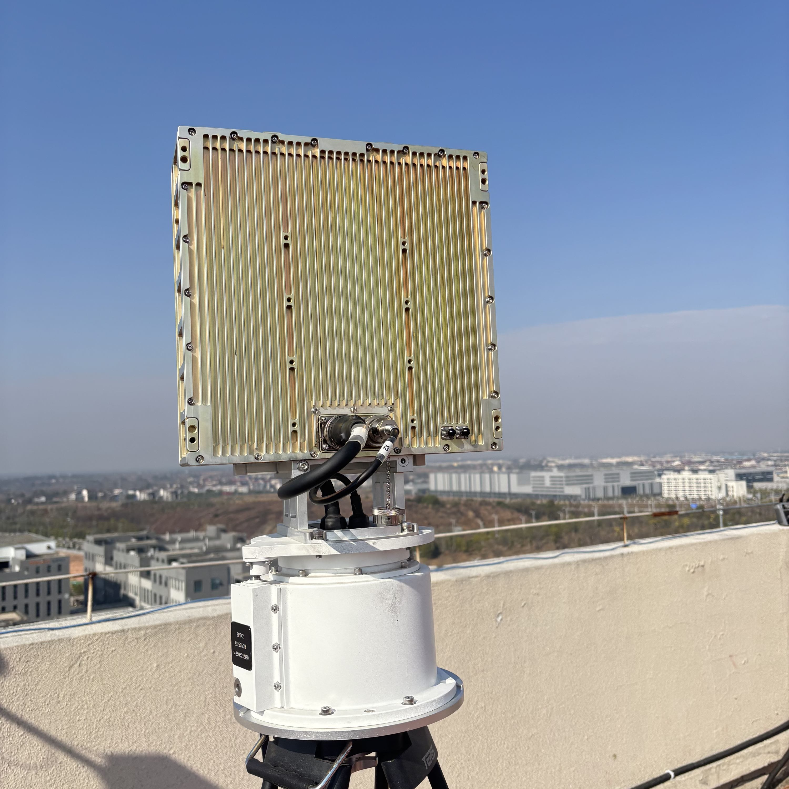
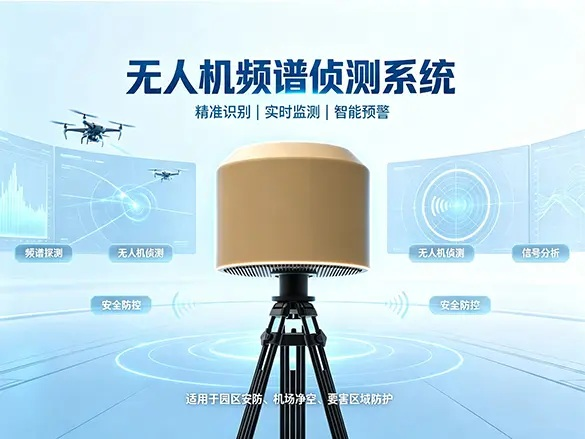
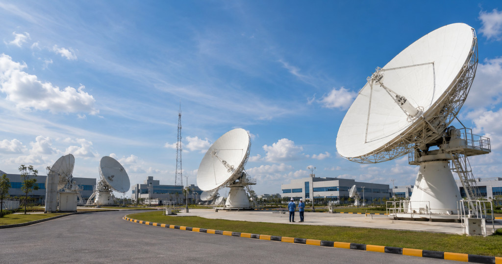
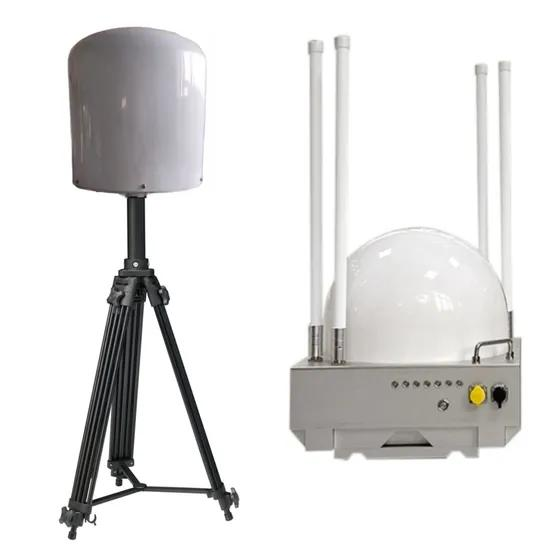
6.1 三层技术体系
| 层级 | 能力构成 | 园区公共平台支撑 |
|---|---|---|
| 感知层 | 雷达（相控阵/监视）、无线电频谱侦测与 TDOA 网格化定位、光电红外、声学探测、视频识别、RemoteID 识别 | 电磁环境试验区、测控指挥中心预留多传感器接入条件，形成统一数据底座 |
| 平台层 | 低空指控与数字孪生平台、机型识别与目标档案、航迹融合跟踪、电子围栏与航线预测、多源告警联动 | 对接国家 UOM 与省市监管平台；空天数据要素平台分级分类、本地化存储、合规运营 |
| 应用层 | 要地防护告警与处置引导、城市低空运行监管、物流巡检与场景运营、公共安全事件复盘与研判 | 面向公安、机场、能源、监所、边检、重大活动开放"以试代购"场景与场景券 |
6.2 AI 六个赋能点
① 目标识别与机型分类
基于频谱特征、回波与光学图像训练分类模型，区分消费级、行业级与大中型机型，建立本地目标档案。
② 多传感器融合跟踪
雷达、频谱、光电、声学、视频交叉校验与航迹融合，降低单传感器虚警与盲区误判。
③ 航线预测与电子围栏
结合航线历史与禁限飞区生成风险预警，支撑低空智联网调度与区域协同监管。
④ 风险研判与指挥调度
事件分级、处置路径推荐、多部门联动留痕，服务公安与重点目标单位值守人员。
⑤ 设备运维预测性维护
对探测设备、链路与平台运行状态监测告警，降低园区与驻场运营商的保障成本。
⑥ 数据要素沉淀与复用
航迹、影像与处置记录合规沉淀，反哺算法迭代、标准研究与人员培训实训。
6.3 技术谱系列示（合规口径）
现有处置手段按强度与可逆性形成谱系：无线电干扰压制、导航诱骗、协议接管（链路劫持）、无人机载网捕、低强度处置（喊话警告、声光驱离）等，各有适用场景与约束条件。
6.4 检测认证与联合实验室抓手
- 绑定工业和信息化部电子第五研究所（国家无人机质检中心）等权威机构，共建低空安防联合实验室与检测认证中心，形成中立化质量背书与园区护城河；
- 对接中国民航适航审定合作机构，为通航整机与 eVTOL 配套提供适航辅导、部件试验与中试场地；
- 与地方公安技术研究单位、中国安全防范产品行业协会合作开展场景测试与标准研究；
- 依托 AI 算力中心承接低空大模型训练、多传感器融合推理与检测算法比对，为入园中小企业提供共享算力与试验条件。
07园区总体规划（三档标准化）
选址逻辑、三档用地与投资参数、功能分区、八大可复制要素与六大特色平台抓手。
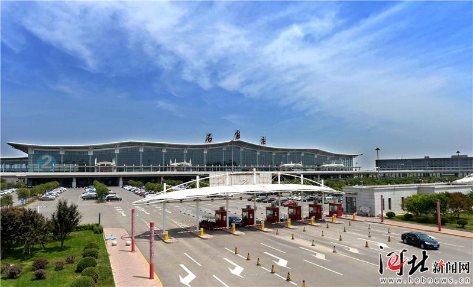
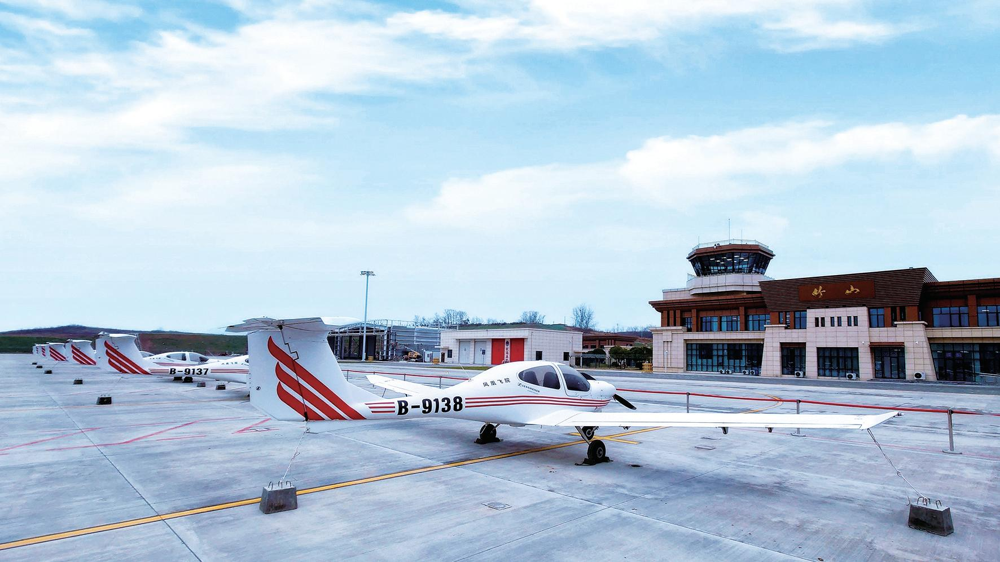
7.1 选址逻辑
园区选址优先满足四项硬条件：一是空域条件，预留试飞半径与净空条件，空域批复先行、"拿地即开工"；二是交通衔接，毗邻运输机场、通用机场或高速公路出入口，满足总装与大件运输；三是产业依托，靠近现有航空、电子信息、国防科技工业集聚区或老工业区改造空间；四是场景就近，周边具备公安、机场、能源、应急等可开放的真实应用场景。不同档位选址逻辑见第十章四大区域参数表。
7.2 三档总体规划参数
| 维度 | 起步园 A | 标准园 B | 旗舰园 C |
|---|---|---|---|
| 用地规模 | 300 亩 | 1,000 亩 | 3,000 亩 |
| 容积率（综合） | 1.2 | 1.2 | 1.3 |
| 载体建筑面积 | 24 万㎡ | 80 万㎡ | 260 万㎡ |
| 平台公司总投资 | 5 亿元 | 20 亿元 | 60 亿元 |
| 撬动入园企业累计固投 | 约 18 亿元（约 600 万元/亩） | 约 75 亿元（约 750 万元/亩） | 约 240 亿元（约 800 万元/亩） |
| 达产亩均税收目标 | ≥50 万元/亩 | ≥60 万元/亩 | ≥70 万元/亩 |
| 建设周期 | 3 年（12—18 个月起步） | 3 年（24—30 个月建成） | 3 年（30—36 个月建成） |
| 适用对象 | 县域 / 临空小点 / 老工业区改造起步 | 地级市 / 省会临空核心园 | 省会 / 国家枢纽、国家级经开区 |
7.3 功能分区（五区，占比可 ±5 个百分点）
| 总部研发区 15% | AI 指控联合实验室、企业总部、保密设计中心 |
| 试飞总装区 35% | 500 米级跑道/垂直起降场、单栋 5,000—7,000 ㎡总装标准厂房；空域批复先行、"拿地即开工" |
| 试验检测区 20% | 电磁环境试验区、测控指挥中心、EMC/风洞、检测认证中心 |
| 场景验证区 20% | 城市低空 1:1 试验场、低空安防靶场，面向政法系统"以试代购" |
| 配套服务区 10% | 人才社区、保密"三证联办"服务站、展示交易中心 |
7.4 八大可复制核心要素
标准厂房；试飞场地＋空域批复；测控指挥＋电磁环境试验区；检测认证中心；共享制造中心；产业基金；人才政策；保密与军工服务。其中"三证联办"（保密资质、科研生产许可、装备承制资格前置辅导）按 2025 年 7 月 1 日新规要求执行：涉密场所 ≥100 ㎡、专职涉密人员 ≥10 名且社保连续 ≥6 个月、外资间接持股 ≤20%。
7.5 六大 AI+空天特色平台（抓手项目，可单列申报专项债与中省资金）
- 低空飞行服务站（A 类/B 类）：对接国家 UOM 与省市监管平台；
- 低空安防联合实验室与检测认证中心：绑定电子五所等权威机构，形成检测认证护城河；
- 空天数据要素平台：航迹、遥感、北斗时空数据分级分类、本地化存储、合规运营；
- AI 算力中心：低空大模型训练、多传感器融合推理；
- 城市级低空安防"以租代购"运营平台：面向公安与重点目标单位提供驻场服务；
- 试飞中试与共享制造中心：复材、结构件、总装共享产线与试飞场地。
08产业链招商图谱（三赛道×三层级长名单）
名单为招商目标库，据公开信息整理（2026 年 10 月）；企业经营、资质与上市状态以工商登记和公开披露为准，签约前逐一尽调。策略：龙头树地标、专精特新撑密度、初创育生态。
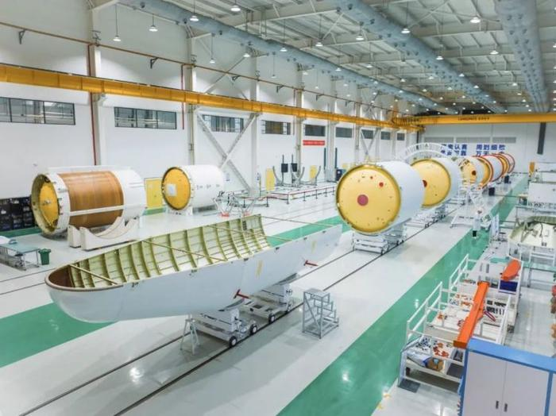
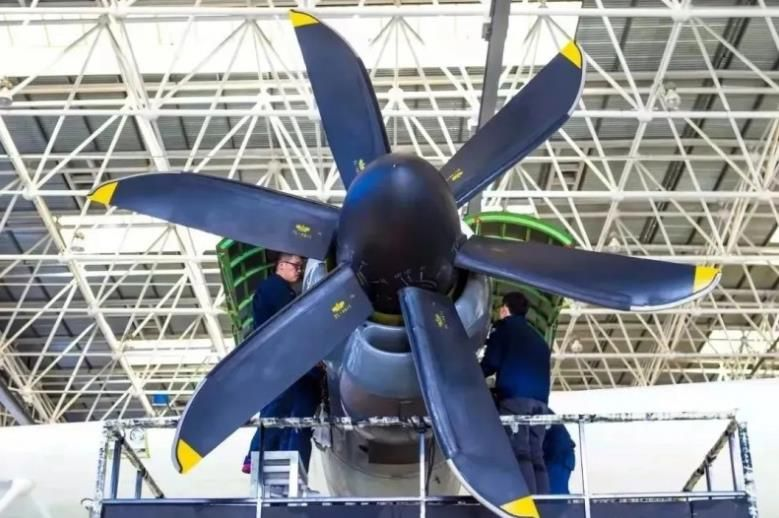
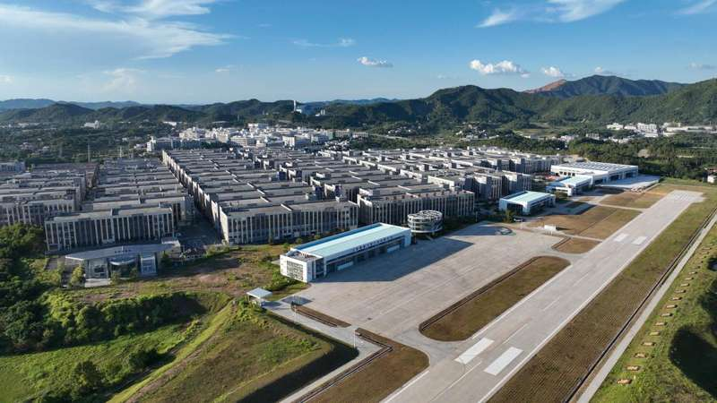
8.1 赛道一：低空安防装备与低空监管服务
| 行业龙头 树地标 / 总包锚点 | 中国电科系（四创电子 600990"低空雪亮/悟空大模型"、国睿科技 600562、电科通信院线）；中国电子/中国电信（天翼星盾 5G-A 低空网）；中科星图（慧安，低空数字孪生平台）；高德红外 002414（红外全链＋车载综合防控）；海康威视、大华股份（公共安全整体方案）；中国航天科工体系化低空安防组合仅作公开报道列示，园区产品定位不参照军工体系。 |
| 专精特新 撑密度 / 订单主力 | 纳睿雷达 688522（双极化相控阵）、大立科技 002214（红外探测器）、上海特金（TDOA 网格化，国家级小巨人）、理工全盛（北理工背景，全频段察打诱一体）、杰能科世（城市级平台，LAS"悟穹"大模型）、华诺星空、北京历正、普宙科技（车载集成）、浙江凡双、云翔科技（电力行业）、神州明达、西安雷擎、成都空御、金锐世纪、青岛中科防务、南京冠航、道普信息、中交遥感天域、数字政通（平台运营）。 |
| 初创 / 新锐 育生态 / 场景券 | 低空 AI 识别、频谱指纹、协议接管、无人机载网捕、低空 SaaS 运营方向早期团队；通过创新创业大赛、电科/航天系孵化器、高校成果转化中心定向发掘；与北京理工大学、电子科技大学、西安电子科技大学、国防科技大学等共建概念验证中心，储备项目动态入库。 |
| 检测 / 认证 / 标准（软锚） | 工业和信息化部电子第五研究所（国家无人机质检中心）、中国民航适航审定合作机构、地方公安一所/三所技术合作、中国安全防范产品行业协会。 |
8.2 赛道二：有人机 / 通用航空 / eVTOL 整机与配套
| 行业龙头 链主 / 产值流量核心 | 亿航智能（EH216-S 全球首个四证齐备，OC 2025-03，合肥商业试运营）；峰飞航空（V2000CG 全球首个吨级 TC，2025-07 首架交付）；小鹏汇天（陆地航母，广州工厂年产 1 万台规划，订单口径近 5,000—7,000 台并注明时点）；沃飞长空（AE200，吉利系，TC 尚未取得，四川证监局辅导备案、拟科创板）；航空工业通飞 / 中航西飞 000768；万丰奥威 002085（钻石飞机）；中航无人机、航天彩虹 002389；腾盾科创（双尾蝎，创业板 IPO 受理）。 |
| 专精特新 取证梯队＋核心配套 | 沃兰特航空（VE25，2026 年完成 3 亿美元 C 轮）、御风未来（M1）、时的科技（E20，芜湖年产 200 架规划）、山河科技、宗申动力 001696（航空活塞发动机）、航发动力 600893 / 中国航发通航动力（通航动力与电推进）、光威复材 300699、中复神鹰 688295（碳纤维）、爱乐达 300696、利君股份、航宇科技 688239（航空锻件）、卧龙电驱 600580（电推进电机）、宁德时代 300750（航空电池，已战投峰飞）、珠海冠宇、孚能科技（航空动力电池）。 |
| 初创 / 新锐 | 分布式电推进、倾转旋翼、飞行控制、轻量化复材、降落伞/气囊、机载航电方向成长企业，按年度融资榜与 eVTOL 产业联盟名单动态招引；区域可设"低空整机中试＋适航辅导"专项，吸引取证中后期团队异地建厂。 |
| 运营 / 服务 | 低空物流（顺丰丰翼、美团无人机、京东物流）、城市空中交通运营商、通航维修 MRO、飞行培训院校、航空金融租赁（中航租赁、苏银金租）。 |
8.3 赛道三：空天信息（卫星互联网 / 北斗 / 遥感 / 商业航天）
| 行业龙头 | 中国星网（GW 星座）、上海垣信（千帆星座，在轨 256 颗）、中国卫通 601698、中国电信（卫星运营＋5G-A）、银河航天（低成本批产卫星）、长光卫星（吉林一号遥感星座）、航天宏图 688066（PIE 遥感）、中科星图 688568（数字地球＋低空平台）、北斗星通 002151、华力创通 300045、海格通信 002465。 |
| 专精特新 | 合众思壮 002383、华测导航 300627、千寻位置（高精度位置服务）、振芯科技 300101、国星宇航（AI 卫星）、微纳星空、九天微星、时空道宇（吉利系，车载＋低空）、航天驭星（测运控）、星图测控；商业火箭：蓝箭航天、星河动力、天兵科技、东方空间、中科宇航（固体/液氧甲烷可重复使用火箭方向）。 |
| 初创 / 新锐 | 遥感 AI 解译、星上算力、相控阵终端芯片、卫星物联网（天通/物联网星座）、通导一体模组、PNT 授时安全方向团队；空天数据应用（低空导航一张图、气象、应急、自然资源）创业企业。 |
| 公共平台 / 机构（软锚） | 中国信通院、中国电子标准院、地方测绘地理信息院、北斗产业园/卫星导航创新中心、空天数据交易所（数据要素流通）。 |
8.4 可复制招商政策包（"一企一策"清单）
资金与载体
落户奖励（按固投/实收资本分档）；租金三免两减半；首台（套）/首版次补贴；研发费用补助与高企、专精特新奖励；产业基金股权投资（让利与回购条款）。
场景与订单
开放城市、机场、能源、公安"以试代购"场景与场景券；链主供应链对接会；省级集采目录推荐撮合。
资质与合规
适航与保密"三证联办"代办；外贸与两用物项合规辅导（对接 2026 年第 49 号公告）；检测认证绿色通道。
人才与配套
购房、落户、子女教育与团队资助；人才公寓与通勤保障；产业人才职称评定专项通道。
09商业模式与财务测算
六收入曲线、资金结构、三档十年模型与评价指标。全部财务数字取自《04_财务测算结果.json》，计算期 10 年（Y1—Y10），折现率 8%，现金流按年末发生。
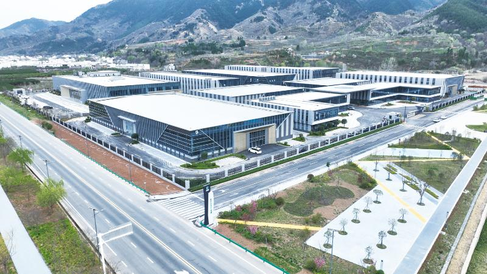
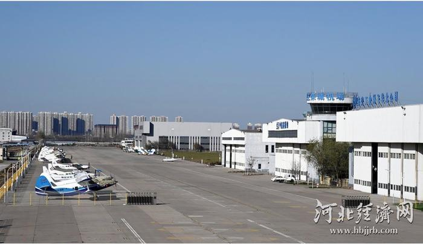
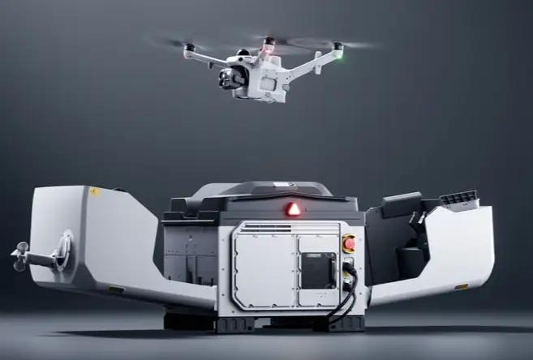
9.1 六条收入曲线（成熟期占比区间）
| 收入曲线 | 成熟期占比 | 构成说明 |
|---|---|---|
| 载体租售 | 35%—45% | 40% 定制出让（Y2—Y4 按 30%/40%/30% 确认），60% 长期持有租赁；出让单价与租金按三档参数执行 |
| 产业服务 | 15%—20% | 检测认证、试飞测试、电磁/EMC 试验、三证联办、培训、会展交易 |
| 平台运营与数据 | 15%—20% | 省市监管平台运维、城市级"以租代购"运营、空天数据要素、AI 算力服务 |
| 产业投资收益 | 10%—20% | 参股企业分红、公允价值变动、子基金 Carry 与管理费净额；Y8 起体现退出高峰（保守口径，不计基金本金回收） |
| 配套运营 | 5%—10% | 人才公寓、商业、停车、能源站 |
| 税收增量返还 | 5%—10% | 以地方留成作为增量基数，与招商履约考核挂钩；平台公司收到后按"其他收益/政府补助"入账，不做税收减免承诺 |
9.2 资金来源结构（平台公司口径，三档一致）
| 来源 | 占比 | 成本/期限假设 |
|---|---|---|
| 财政资金（中央预算内/超长期特别国债补助、本级财政拨款） | 10% | 无偿，计入资本公积 |
| 地方政府专项债（产业园/低空基础设施，收益自平衡） | 25% | 利率 2.5%，期限 15 年，建设期付息，第 4 年起等额本金 |
| 政策性银行＋商业银行贷款 | 40% | 利率 4.0%（LPR 基准），期限 10—12 年，建设期付息，第 4 年起等额本金 |
| 产业基金（引导基金让利＋社会资本 GP＋央企链主 CVC） | 20% | 权益/明股实债，要求年化 6%—8%，第 6—8 年通过 REITs/股权转让退出 |
| 平台公司自筹（一二级联动、载体预售、REITs 回笼） | 5% | — |
综合资本金比例 35%（财政 10%＋基金 20%＋自筹 5%），债务比例 65%；建设期利息由自筹资金平衡垫资。
9.3 三档静态投资构成（亿元）
9.4 三档十年收入与净利润（Y1—Y10，亿元）
9.5 累计现金流与投资回收期
9.6 评价指标汇总（基准折现率 8%）
| 指标 | 起步园 A | 标准园 B | 旗舰园 C |
|---|---|---|---|
| 静态总投资（亿元） | 5.0 | 20.0 | 60.0 |
| 全投资税后 IRR | 6.29% | 7.11% | 13.82% |
| 资本金税后 IRR | 17.93% | 20.75% | 43.19% |
| 全投资 NPV（8%，万元） | −2,723.7 | −5,611.7 | +109,136.9 |
| 资本金 NPV（8%，万元） | 5,416.8 | 26,950.2 | 206,822.6 |
| 静态投资回收期（年） | 8.25 | 8.05 | 6.76 |
| 动态投资回收期 | 计算期 10 年内未回收 | 计算期 10 年内未回收 | 8.13 年 |
9.7 敏感性分析：六因素对全投资 IRR 的影响（以起步园 A 为基准）
结论：返税比例为第一敏感因素（有利 100% 全期 → IRR 9.87%，不利 60% 全期 → 5.66%，摆动 3.58 个百分点）；其后为达产速度（推迟 1 年 → 3.67%）与投资额（+10% → 4.08%）。标准园 B 前两位为返税比例（摆动 3.56 个百分点）与投资额（2.68 个百分点）；旗舰园 C 前两位为返税比例（3.69 个百分点）与投资额（3.33 个百分点）。项目筹备期应优先锁定招商履约协议中的返还比例与基数条款，并将达产节奏、投资概算控制列为核心管理目标。
9.8 税收与就业社会效益（十年累计 / 达产年口径）
| 效益指标 | 起步园 A | 标准园 B | 旗舰园 C |
|---|---|---|---|
| 十年累计全口径税收（亿元） | 10.44 | 41.76 | 146.16 |
| 十年累计地方留成（亿元） | 3.97 | 15.87 | 55.54 |
| 十年累计平台税收返还（亿元） | 2.57 | 10.27 | 35.96 |
| 达产直接就业（人） | 3,372 | 11,200 | 36,260 |
| 上下游带动就业（人，1:2.5） | 8,430 | 28,000 | 90,650 |
| 达产亩均税收目标（万元/亩） | 50 | 60 | 70 |
就业测算口径：产业厂房 12 人/千㎡、研发载体 18 人/千㎡，配套另计；A 档厂房岗位 2,016 人、研发岗位 1,296 人、平台员工 60 人；B 档 6,720＋4,320＋160 人；C 档 21,840＋14,040＋380 人。
10全国复制推广：四大区域 × 一省一策
同一产品内核、四套区域参数与五个经济带落位建议；各地在选址、档位、产业侧重与资金组合上按资源禀赋适配。
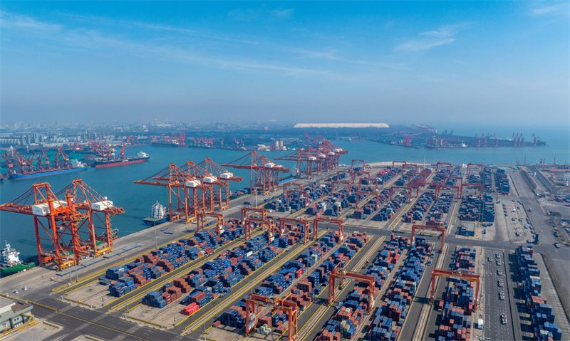
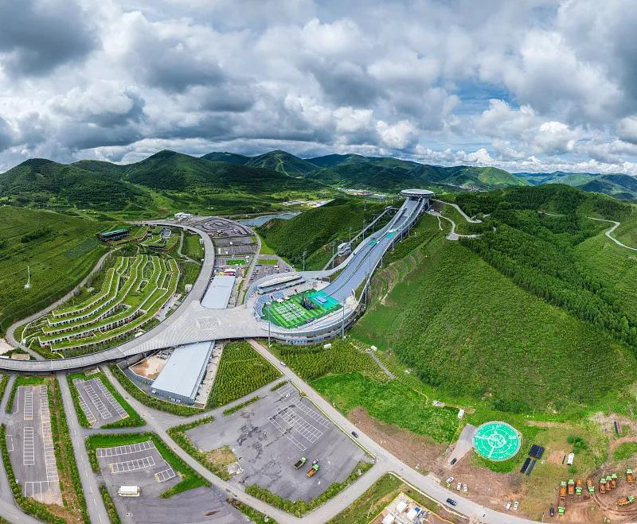
10.1 四大区域标准化参数表
| 区域 | 选址与空域条件 | 投资强度参考（万元/亩） | 产业侧重 | 市场侧重 | 政策侧重点 |
|---|---|---|---|---|---|
| 东部沿海 | 临空经济区 / 老工业区改造；空域紧张，优先垂直起降与城市运营场景 | 800—1,000 | 总部研发、AI 平台、空天信息、整机总装出口 | 出口＋一线城市要地防护＋城市运营 | 研发补助、场景开放、数据要素、基金让利 |
| 中部地区 | 通用机场周边 / 老工业基地；空域条件较好，辐射中西部 | 550—800 | 整机与复材配套、检测认证、通航运营 | 中部要地防护＋物流＋文旅 | 专项债、厂房三免两减半、订单撮合 |
| 西部地区 | 高原 / 边疆 / 荒漠试验场；辐射东盟、中亚；气候与地形差异化试验条件 | 450—750（边疆 450 起） | 边防低空安防场景验证、高原通航、卫星应用、遥感测控 | 沿边防护＋高原试验＋场景服务 | 中央预算内、转移支付、人才补贴、边疆场景示范 |
| 东北地区 | 老工业基地；高寒试验场与低空飞行培训基地基础较好 | 450—600 | 高寒试验、飞行培训、复材与结构件、寒地装备 | 区域要地防护＋培训＋检修 MRO | 专项债、人才回流政策、装备首台套 |
10.2 四大区域投资强度区间对比
10.3 五个经济带落位建议
京津冀临空带
旗舰园或标准园：总部研发与 AI 平台集聚，对接首都机场群与城市级监管平台示范场景。
长三角产业带
标准园为主：整机与核心配套、空天信息总部，依托苏州、无锡、合肥、芜湖现有航空与卫星产业基础。
粤港澳大湾区
旗舰园：eVTOL 总装、低空运营与出口基地，对接深圳 2,000 架无人机出海、广州花都综合保障基地。
成渝双城圈
标准园：西部场景验证与空天信息配套，对接成都 8 只超百亿元基金与重庆 20 亿元空天低空基金。
沿边与高原试验带
起步园＋场景验证基地：边防要地防护场景、高原与寒地试验、口岸低空监管服务。
10.4 "一省一策"可调参数清单
各省复制时在产品内核不变前提下，调整下列参数：选址档位（300 / 1,000 / 3,000 亩）、容积率与载体比例、产业侧重三赛道权重、招商目标名单、基金规模与让利条款、专项债与政策性贷款配比、人才政策力度、空域与场景开放范围、检测认证中心等级。品牌标识、运营服务手册、平台系统与标准厂房模块保持统一，形成"一总部＋多基地＋边防场景验证"网络。
11落地实施路线图与保障机制
四条工作泳道并行推进，里程碑按"先报批报建、再建设招商、同步融资、后培育退出"排布。
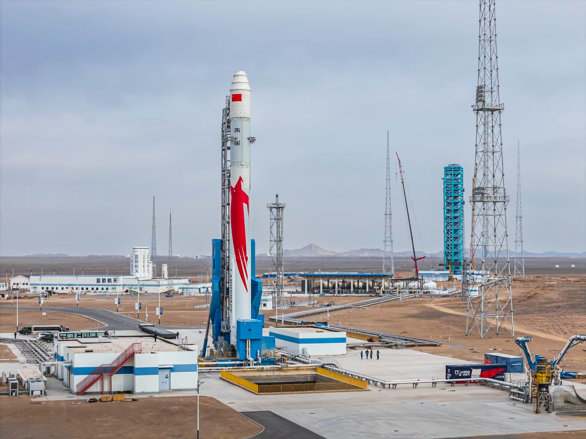
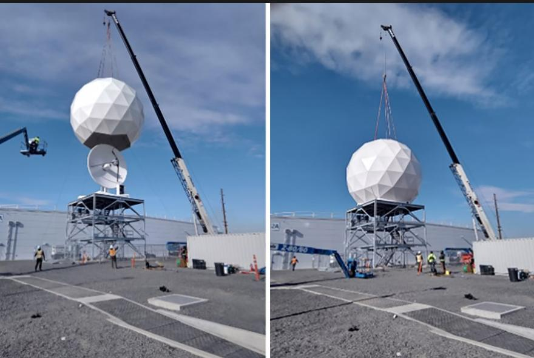
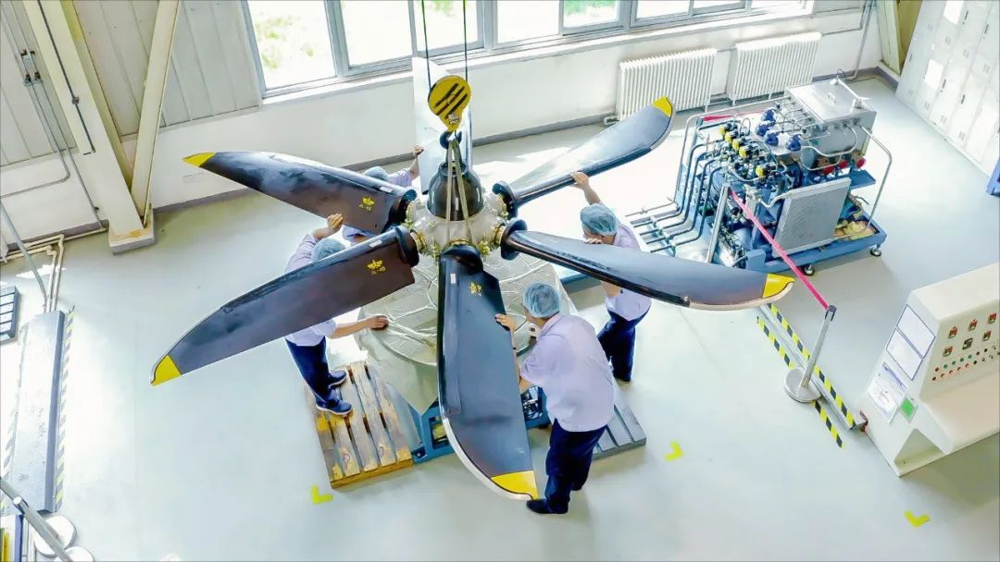
11.1 实施甘特图（0—60 个月）
11.2 里程碑节点
| 阶段 | 时间节点 | 关键成果 |
|---|---|---|
| 启动期 | 第 0—6 个月 | 完成可研与决策立项；专项债入库申报；平台公司组建；引导基金与链主框架协议；用地与空域条件落实 |
| 建设一期 | 第 6—12 个月 | 一期厂房、试飞场地与公共平台开工；首批场景开放与场景券发布；首批龙头企业签约 |
| 建成投产 | 第 1—3 年 | 分期建成、竣工即投产；链主与专精特新企业落地；检测认证中心与 AI 算力中心投用；专项债与贷款按进度提款 |
| 达产培育 | 第 3—5 年 | 招商完成度 ≥70%，实现达产指标；启动 Pre-REITs 资产包培育；基金按约定条款推进退出；异地复制选址与标准输出 |
11.3 平台公司股权结构（标准园 B 示例）
| 出资方 | 持股比例 | 角色 |
|---|---|---|
| 地方政府（平台公司＋财政出资） | 35% | 控股股东，公共资产监管与公共平台职能 |
| 产业引导基金（省级＋市级） | 25% | 让利优先、回购条款前置约定 |
| 专业运营商（品牌＋招商＋运营） | 20% | 绑定管理协议与业绩对赌，输出服务标准与体系 |
| 央企/链主社会资本＋园区基金 LP | 20% | 订单锚点、供应链对接与市场化资本补充 |
起步园 A 可由地方平台公司控股、运营商小额参股；旗舰园 C 引入省级平台与链主共同出资，强化规模与资产证券化条件。
11.4 组织架构与六项政策请求
平台公司下设：招商运营部、工程建设部、平台技术部（飞服/安防运营/AI 算力）、企业服务部（三证联办与合规辅导）、财务部（基金与专项债台账）、综合保障部。
① 专项债与中央资金
将园区平台、试飞中试、检测认证与算力中心纳入地方专项债项目库与"两重"储备清单，争取超长期特别国债与中央预算内补助。
② 基金与金融工具
设立省市级空天低空产业基金，明确让利与回购机制；开展科创债、产业园 REITs 与 Pre-REITs 培育。
③ 空域与场景
协调空域批复与试飞场地条件，开放政务、公安、机场、能源、应急场景与场景券。
④ 用地与载体
保障园区用地指标、容积率与配套设施；标准厂房与总装厂房模块化供地。
⑤ 人才政策
落户、住房、子女教育与团队资助专项；建立航空、电子信息类职称评定通道。
⑥ 资质与合规
支持检测认证平台建设；统一提供适航辅导、保密"三证联办"与两用物项合规辅导。
12风险合规与社会效益
风险识别与对策、合规护城河边界，以及项目的社会效益定位。风险表述与测算口径保持一致，不回避公益性财务特征。
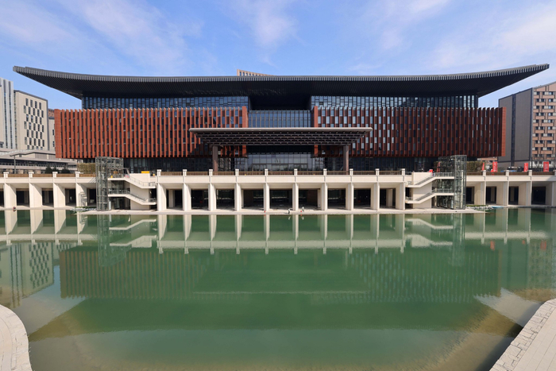
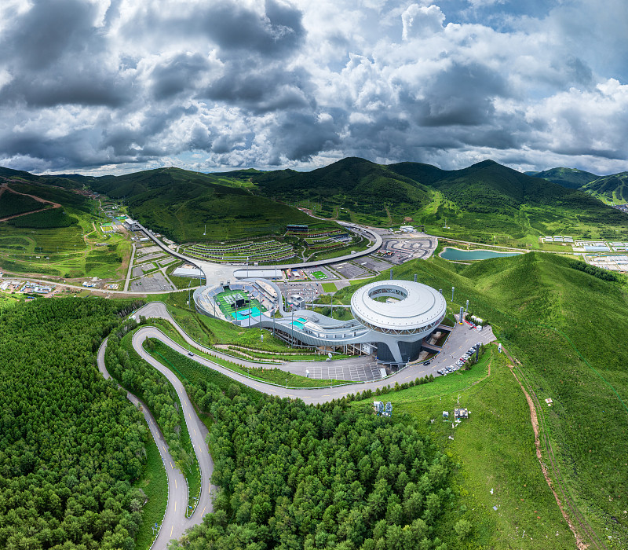
12.1 风险识别与对策
| 风险类别 | 风险表现 | 对策 |
|---|---|---|
| 政策口径风险 | 强制配置清单不明、税收返还政策存在退坡可能 | 需求依据锚定《反恐怖主义法》第三十一条与国令第 761 号第四十三条；返税协议以地方留成为基数并与招商履约考核挂钩；财务模型同时列示含返税与常态经营双口径，不做减免承诺。 |
| 市场竞争风险 | 传统安防与通信企业向低空领域转型，装备价格竞争加剧 | 园区聚焦检测认证、场景运营、平台与数据要素等高附加值环节；以链主龙头订单与供应链对接形成招商锚点，避免陷入单一装备价格战。 |
| 取证周期风险 | 通航/eVTOL 整机 TC、OC 取得周期存在不确定性 | 按取证梯队招引企业，园区载体与服务收入不绑定某一型号取证结果；配套企业先行入驻形成现金流。 |
| 空域审批风险 | 试飞场地与空域批复滞后于建设计划 | 选址阶段前置协调空域与净空条件；一期先建设标准厂房与可落地平台设施，试飞场按批复节奏推进。 |
| 招商不及预期 | 龙头入驻率低、载体空置、租金回款慢 | 政务场景与平台订单托底；按三档分期开发控制投入强度；运营商与基金协议绑定招商完成度对赌。 |
| 合规经营风险 | 两用物项出口、数据分级分类、保密资质边界把握不当 | 设立合规辅导服务站；数据本地化存储与分级分类管理；涉两用物项业务对照 2026 年第 49 号公告建立内控制度。 |
| 财务平衡风险 | A、B 档平台全投资 NPV 在 8% 折现率下为负 | 明确平台公益属性与公共基础设施定位，争取专项债、中央预算内与特别国债支持；第 5 年起培育 REITs 退出改善长期现金流；项目评价以税收、就业、产业集聚等社会效益与战略价值为重要维度。 |
12.2 合规护城河：四条边界
法律依据边界
项目需求论证仅引用现行公开法律、行政法规与部门规章；不引用查无此文的文件，不使用无文号的"强制清单"表述。
产品定位边界
园区产品统一为低空安防、要地防护、民用与公共安全装备、低空运行监管服务；不涉及武器制造工艺、军队部署与作战使用。
数据与网络安全
航迹、遥感与位置数据分级分类、本地化存储；平台对接国家 UOM 与省市监管平台，按权限分级开放接口。
出口与两用物项
涉两用物项企业建立合规内控流程；军贸内容仅引用公开报道，园区不组织军品交易与军品生产。
12.3 社会效益
- 国家安全与公共安全治理：完善机场、能源、监所、边检与重大活动等重点目标防护能力，支撑低空安全治理体系现代化，属公共安全装备与服务范畴。
- 就业带动：三档达产直接就业 3,372 / 11,200 / 36,260 人，上下游带动 8,430 / 28,000 / 90,650 人，为地方留住航空、电子信息与软件技能人才。
- 财政贡献：十年累计全口径税收 10.44 / 41.76 / 146.16 亿元，地方留成 3.97 / 15.87 / 55.54 亿元；达产亩均税收达到 50 / 60 / 70 万元/亩目标。
- 产业升级与区域协调：带动复材、电子、软件、检测与现代服务业集聚；中部、西部与东北地区可依托特色场景实现产业换道，缩小区域差距。
- 示范复制价值：三档标准化产品与"一总部＋多基地＋边防场景验证"网络，可为全国各省提供可复制、可考核、可审计的产业社区样板。
- 新质生产力载体：对接"人工智能+"行动与新质生产力要求，形成 AI、通航/eVTOL、商业航天与低空安全融合的产业试验场。
13多媒体·影像资料
园区概念宣传片、精选影像画廊与图片来源汇总。视频与图片均为民用低空安防 / 要地防护 / 民用与公共安全装备口径，不含军事部署与作战画面。
13.1 园区概念宣传片（15 秒，720p）
画面内容：现代化研发楼群航拍、民用工业无人机编队、eVTOL 电动垂直起降飞行器在园区起降平台起降、屋顶球形光电监测与民用通信雷达天线；无文字水印、无军事内容。主源为本地文件 media/park_showreel.mp4，云端短链仅作临时备用。
13.2 精选影像画廊
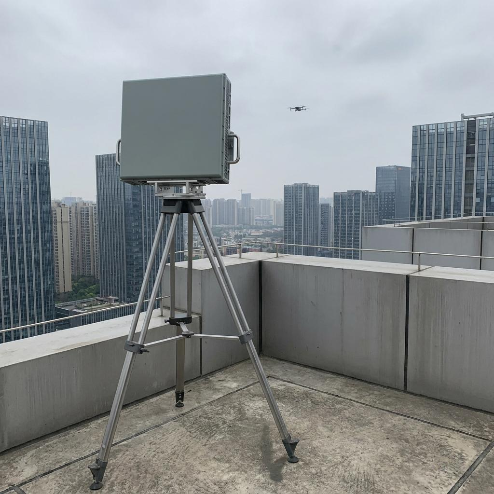
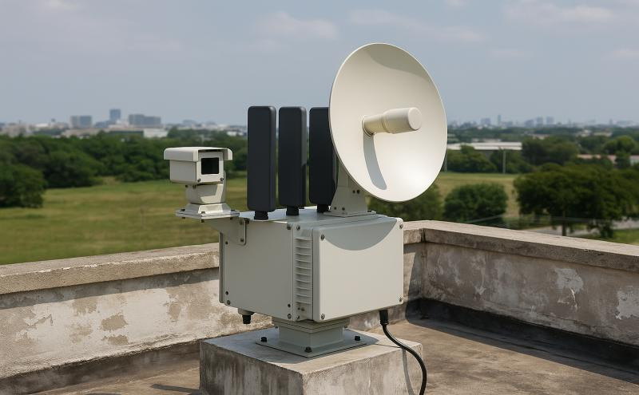
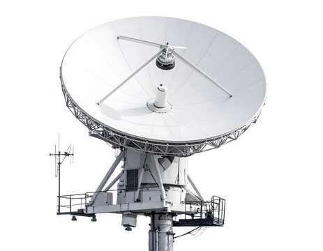
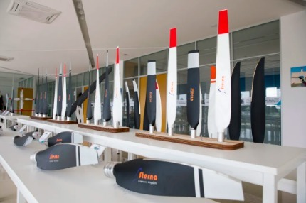
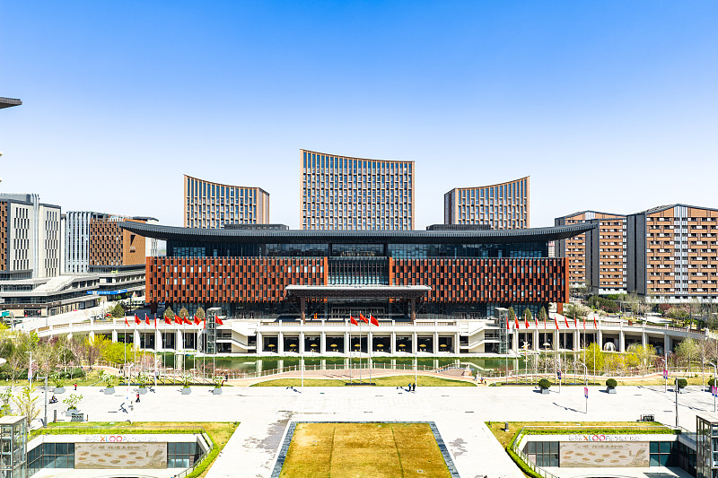
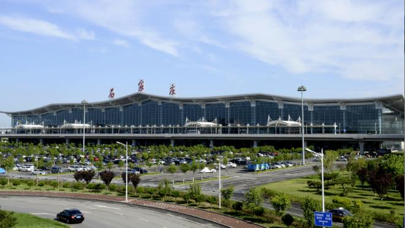
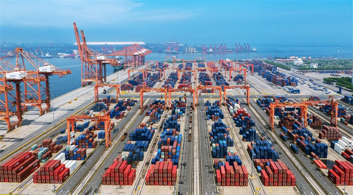
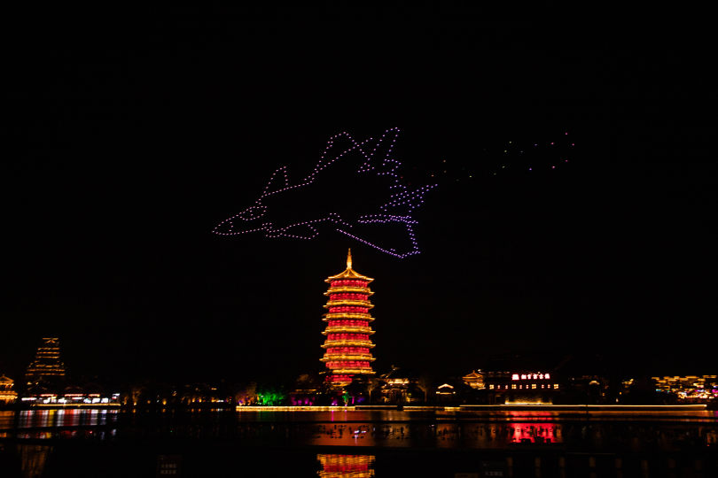
13.3 图片与视频来源汇总
本章及各章配图共 47 张，均来自公开新闻报道、政府发布、厂商公开产品资料与公开图库；引用仅用于产业经济分析与招商论证说明。主要来源域名汇总如下：
- 视觉中国（vcg.com）：雄安站航拍、雪如意系列、雄安商务服务中心等。
- 人民网 / 河北日报 / 经济参考报：唐山港集装箱码头、朱雀二号发射场等。
- 新华社 / 澎湃新闻 / 长沙晚报 / 合肥日报 / 凤凰网：赣州低空经济产业园、徐汇滨江无人机编队、星城天眸机巢、EH216-S 编队、中捷通用机场、朱雀二号遥七发射等。
- 新浪财经 / 搜狐 / 太平洋科技 / 河北经济网：输电塔机巢部署、唐山港智慧码头、EH216-S 飞行、栾城通用机场、朱雀二号总装等。
- 厂商公开产品资料：低空监视雷达、频谱侦测、固定式反制设备、侦测干扰一体化系统、大疆机场等民用低空安防装备。
- 视频：AI 文生视频生成（15 秒 720p MP4），园区概念宣传片，无第三方版权主张；云端备用短链为临时链接，不保证长期有效。
说明：全部图片与视频均以相对路径引用（images/、media/），随本 HTML 目录整体分发；单张图片未加载时以 alt 文本占位，不影响正文阅读。
附资料来源、财务假设与术语说明
下列来源为正文政策、市场、招标与案例数据的引用依据；媒体测算与机构预测口径已在对应章节标注。来源按类别分组，合计 90 余条。
A. 法律法规、政策文件与官方发布
- 《无人驾驶航空器飞行管理暂行条例》（国务院、中央军委令第 761 号）：gov.cn；民航局文本 PDF：caac.gov.cn
- 《中华人民共和国治安管理处罚法》（2025 年修订，主席令第四十九号）：npc.gov.cn
- 2023 年中央经济工作会议（首提低空经济）：gov.cn
- 2025 年《政府工作报告》：gov.cn
- 2026 年《政府工作报告》：gov.cn
- 二十届四中全会《中共中央关于制定国民经济和社会发展第十五个五年规划的建议》：gov.cn
- 《国务院关于深入实施"人工智能+"行动的意见》（国发〔2025〕11 号）：gov.cn；政策解读：gov.cn
- 《低空经济及其核心产业统计分类（试行）》（发改低空〔2025〕1676 号）：gov.cn；发改委答记者问：ndrc.gov.cn
- 国家发展改革委低空经济发展司机构设置：ndrc.gov.cn
- 《通用航空装备创新应用实施方案（2024—2030 年）》四部门联合印发：gov.cn PDF
- 民航局《关于印发〈促进通用航空空中游览和跳伞发展暂行管理办法〉的通知》：caac.gov.cn
- 中共中央、国务院《关于发展新质生产力的意见》（2026-10-09，新华社）：xinhuanet.com
- 商务部、海关总署、中央军委装备发展部 2026 年第 49 号公告（两用物项）：mofcom.gov.cn；海关总署转载：customs.gov.cn
- 《国务院办公厅关于优化完善地方政府专项债券管理机制的意见》（国办发〔2024〕52 号）：gov.cn
B. 统计公报、官方数据与行业公开资料
- 2025 年民航行业发展统计公报：caac.gov.cn；公报评读 PDF：caac.gov.cn PDF
- 新华网：2025 年注册无人机 328.7 万架、飞行 4,530.29 万小时：xinhuanet.com
- 国新办发布会：2023 年低空经济超 5,000 亿元、2030 年有望达 2 万亿元：gov.cn
- 国家发改委专家解读：2023 年规模 5,059.5 亿元（赛迪口径）：ndrc.gov.cn
- 新华网年终报道：2025 年约 1.5 万亿元、2035 年 3.5 万亿元预测：news.cn
- 民政部《2024 年民政事业发展统计公报》（专用设备制造 2,776 家、规上收入 4,547.4 亿元，安全防范相关）：mca.gov.cn PDF
- 国家航天局转引赛迪研究院：2025 年商业航天核心产业 1.01 万亿元：cnsa.gov.cn
- 工业和信息化部无线电管理局工作动态（千帆星座 256 颗，2026-09-16）：miit.gov.cn
- 广州花都综合保障基地一期项目批复：huadu.gov.cn
- 新华网：2026 年政府投资安排（超长期特别国债 1.3 万亿、专项债 4.4 万亿、中央预算内 7,550 亿元）：news.cn
- 36 氪转载"低空 Future"研究院：国内市场宽口径序列与价格带调研：36kr.com
C. 国际市场研究机构与企业公开披露
- Grand View Research：Anti-Drone Market：grandviewresearch.com
- MarkNtel Advisors：Counter-UAS System Market：marknteladvisors.com
- Straits Research：Anti-Drone Market：straitsresearch.com
- MarketsandMarkets：Anti-Drone Market（全球窄口径）：marketsandmarkets.com
- MarketsandMarkets：China Counter-CUAS Systems Market：marketsandmarkets.com
- Fortune Business Insights：Anti-Drone Market Report 103402：fortunebusinessinsights.com
- ResearchIntelo：Anti-Drone Market Report：researchintelo.com
- Arizton：Counter-Drone Systems Market Report：arizton.com
- Market Research Future：Anti-Drone Market 177397：marketresearchfuture.com
- DroneShield FY2025 Annual Report（A$216.5m，pipeline 与订单口径区分）：drone-shield.com PDF；AGM 投资者演示：drone-shield.com PDF
- Anduril Series H 融资公告（媒体口径收入与估值仅作参照）：anduril.com
- Dedrone 企业档案：droneintelligence.ai；Axon 收购 Dedrone 公告：axon.com
- Fortem 技术综述（挪威空防协会转载，含美制装备谱系公开资料）：norskluftvern.com
D. 招标采购实证公告（政府采购网与公共资源交易平台）
- 西安市公安局低空安防装备采购 668.32 万元：ccgp.gov.cn
- 文山州公安局无人机反制设备 225.00 万元：ccgp.gov.cn
- 毕节市公安局无人机反制设备采购 138.20 万元：ccgp.gov.cn
- 北京大兴公安分局无人机侦测反制设备 350.00 万元：ccgp.gov.cn
- 北京通州公安分局无人机反制设备 152.00 万元：ccgp.gov.cn
- 安徽省机场公安局无人机反制设备 247.61 万元：ccgp.gov.cn
- 甘肃省机场公安局无人机反制设备 96.00 万元：ccgp.gov.cn
- 太原武宿机场驱鸟＋探鸟＋反制组合包 1,959.72 万元：sxairport.org.cn
- 上海监狱管理局无人机反制设备 129.60 万元：ccgp.gov.cn
- 宁夏监狱管理局无人机反制设备 365.00 万元：ccgp.gov.cn
- 山西石楼看守所无人机反制设备 79.28 万元：ccgp.gov.cn
- 国家核安保技术中心无人机反制设备 118.00 万元：ccgp.gov.cn
- 深圳重大活动安保低空安防租赁 548.66 万元：szdhit.com；招标公告：ccgp.gov.cn
- 内蒙古包头边检总站无人机侦测反制系统 48.65 万元：ccgp.gov.cn
- 合肥市低空经济基础设施项目（一期）1.4541 亿元：ahtba.org.cn
- 汉中市低空经济数字化基础设施及配套场景建设项目 2.95 亿元：hanzhong.gov.cn
- 宿迁宿城区低空全域智慧运营体系 1.4888 亿元（新浪财经转载公告）：sina.com.cn
- 山东省低空智能网联系统平台开发项目 4,505 万元：ccgp.gov.cn
- 山东省公安厅民用无人驾驶航空器管控与实战一体化平台 1,205.30 万元：ccgp.gov.cn
- 泸水市城市空地一体化低空治理综合体 1,749.80 万元：ccgp.gov.cn
- 辉县市一网统飞平台 1,503.19 万元：sxafz.com
- 青海省无线电监测站无人机反制与监管平台 468.80 万元：ccgp.gov.cn
- 军队采购网公开公告入口（仅引用公开事实）：plap.mil.cn；公开项目编号 2025-JLSXJN-W3005：plap.mil.cn
E. 地方政策、园区、基金与金融工具案例
- 广东省低空经济发展行动方案：drc.gd.gov.cn
- 深圳市基础设施建设实施方案：sz.gov.cn
- 广州市低空经济高质量发展总体方案：gz.gov.cn
- 安徽省"低空+"产业发展行动计划：ah.gov.cn
- 合肥市促进低空经济发展若干政策（PDF）：hefei.gov.cn PDF
- 四川省人大代表建议办理答复（低空产业政策）：sc.gov.cn
- 中新网：湖南低空经济 2026 年上半年运行数据：chinanews.com.cn
- 陕西省低空经济发展行动计划（PDF）：shaanxi.gov.cn PDF
- 南京市低空经济发展实施方案：nanjing.gov.cn
- 苏州市低空经济发展实施方案：suzhou.gov.cn
- 无锡市低空经济发展实施方案：wuxi.gov.cn
- 湖北省低空经济发展实施方案：hubei.gov.cn
- 成都市政府投资环境专栏：chengdu.gov.cn
- 重庆市设立 20 亿元空天低空产业基金：cq.gov.cn
- 湖南省基金矩阵（30+10+5+5 亿元）：hunan.gov.cn
- 广州花都区空天产业基金（认缴 4.5 亿、首期 1 亿）：huadu.gov.cn
- 南宁市 10 亿元创新生产力基金：nanning.gov.cn
- 合肥市 200 亿元引导母基金与 100 亿元未来产业基金（PDF）：hefei.gov.cn PDF
- 人民网：自贡低空经济专项债 4.94 亿元：people.com.cn
- 济南临空评测中心专项债 2025 年 4,000 万元（利率 1.99%）：licheng.gov.cn
- 汤阴县储备航空类项目 14 个、总投资 60.8 亿元：tangyin.gov.cn
- 中金联东民营产业园首单 REIT（508003）路演材料：sseinfo.com
- 易方达广州开发区产业园 REIT 产品资料：efunds.com.cn
- 广州花都产业园 9.7 亿元项目进展：huadu.gov.cn
- 长春高寒试验场 5 亿元项目：jl.gov.cn
- 吉林航空实训基地 6,500 万元项目：jl.gov.cn
- 芜湖航空产业基地 2025 年产值 350 亿元：wuhu.gov.cn
- 新华网：十五运会低空安保点位与保障情况：news.cn
F. 财务假设摘要（冻结口径，03 号文件）
- 计算期 10 年（Y1—Y10），折现率 8%，现金流按年末发生；企业所得税 25%，亏损向后结转（模型期内按累计余额简化处理）。
- 平台公司静态投资仅含土地一级开发、基础设施、标准载体与公共平台设备；入园企业固投、税费与就业独立测算，不计入平台公司收入成本。
- 六收入曲线成熟期占比：载体租售 35%—45%、产业服务 15%—20%、平台运营与数据 15%—20%、产业投资收益 10%—20%、配套运营 5%—10%、税收增量返还 5%—10%。
- 资金来源：财政 10%、专项债 25%（2.5%、15 年）、银行贷款 40%（4.0%、10—12 年）、产业基金 20%、自筹 5%；资本金比例 35%。
- 平台累计税收返还 = 地方留成 × 35%；不与国家级开发区"地均税收"口径混用；A/B 档动态回收期计算期内未回收。
- 就业口径：产业厂房 12 人/千㎡、研发载体 18 人/千㎡，上下游带动按 1:2.5 测算。
G. 术语表
| UTM | Unmanned Aircraft System Traffic Management，无人机交通管理（低空智联网平台）。 |
| UOM | 国家无人驾驶航空器一体化综合监管服务平台。 |
| eVTOL | 电动垂直起降航空器。 |
| TC / OC | 型号合格证 / 生产许可证（民航适航概念）。 |
| EMC | 电磁兼容试验。 |
| TDOA | 到达时间差定位，无线电频谱侦测定位方法。 |
| PNT | 定位、导航与授时（Positioning, Navigation, Timing）。 |
| REITs / Pre-REITs | 基础设施不动产投资信托基金 / 资产证券化前培育阶段。 |
| AIC | 产业投资公司（Artificial Intelligence Industry Capital 类平台性投资机构）。 |
免责声明
本计划书为项目筹备阶段内部汇报材料，所有财务测算基于 03 号文件冻结假设与 04 号结果文件，不构成投资承诺、招商要约或最终可研结论；机构预测与媒体测算数据均已标注口径，不代表项目实际收益。涉及企业名单为招商目标库，企业经营状态以工商登记与公开披露为准。涉密事项不在本件讨论范围，对外发布前须经保密与合规审查。